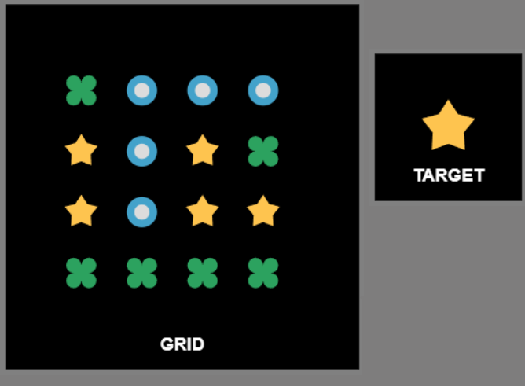

In this game you need to click on target symbols as fast as possible. For example, your target below is an orange triangle. So you will have to click on all three orange triangles on the grid.  To understand how to play the game, you will go through a 4-step tutorial. Please read the instructions carefully. You can use the button "Back" if something is unclear. Click on the button “Next” to start the tutorial.